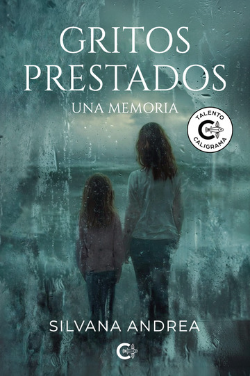

Gritos prestados. Una memoria
Silvana Andrea
“Hay historias que no se escriben para cerrar una herida, sino para dejar de sostenerla sola.”
Una memoria sobre trauma complejo infantil, negligencia emocional, maltrato psicológico y el largo camino de la reconstrucción. Un testimonio íntimo que dialoga con la filosofía, la música y la literatura de autores como Hermann Hesse.